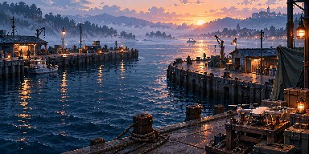
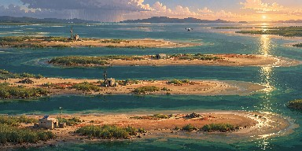
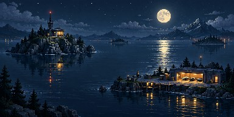
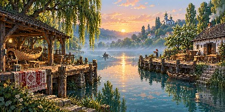
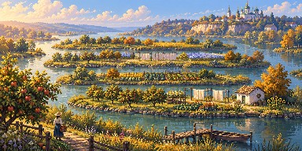
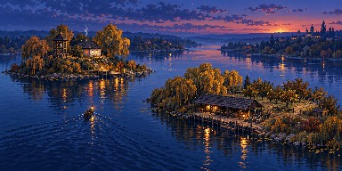
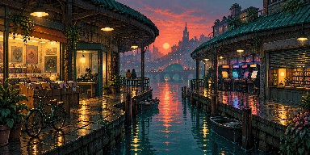
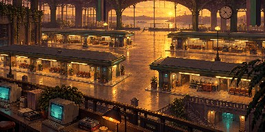
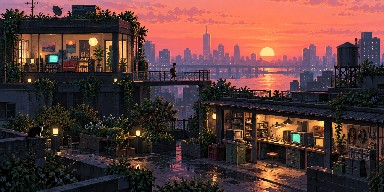
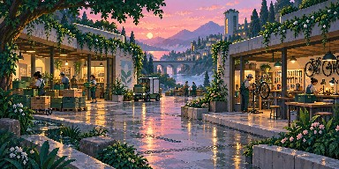
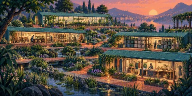
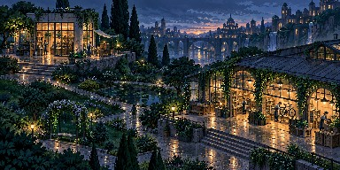
Twelve source candidates. Click a preview to inspect its untouched original PNG. These scenes echo composition cues; they are not collision maps or evidence of runtime adoption or full quality. Guide and caveats.











